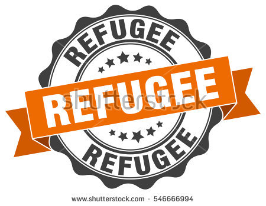

Hosein
Country of Origin: Greece
Current Location: London
20 Mutual Friends
Skills
Badges
Hosein's Story
Hosein is an Afghan Civil Engineer student. He was born in Iran and along with his mother and sister, they sailed off from the Turkish coast heading for Samos Island in Greece. Their boat sunk at high seas on 11 July 2014 and his mother and sister are missing. Hosein and his three other sisters, two in France and one in Germany, have left no stone unturned in trying desperately to find a clue that would lead them to their beloved ones:
The past ten days were the most agonizing days of my life. On 10 July, along with with my mother Fatme and my sister Shokoufeh, we sailed off in a 12 meter boat after having paid 9,000 Euro for the three of us. It was overcrowded as the smugglers had crammed around 40 men, women and children on that little boat.
After several hours at sea, the captain informed us that he was no longer in command of the boat which suddenly started taking in water.
Among terrified screams, I tried to elbow myself to reach the small cabin where my mother and sister were, but I was hurled overboard by panicking passengers. I was very desperate. In the sea, the currents were so strong that I could hardly swim. It was only until several hours later, namely on Friday 11 July at noon, that I along with another, almost unconscious passenger, were spotted by an Italian sailing boat and were transferred to Chios Island. Other survivors were brought to Samos. Fifteen Syrians and Afghans have been rescued. The shipwreck so far claims the lives of six persons who were found by the Greek and Turkish Coast Guards while the rest are still missing.
Other family members of missing people with whom we were in the same boat, are in Germany and in Denmark while I am currently in France with my two sisters and their families. I traveled legally on a travel document issued by the French Embassy in Athens. All the families of missing people are appealing that the search and rescue operations of the authorities continue unabated. We urge the Greek authorities to bring up the boat as there were women and small children in the cabin who may have been trapped.
As for my missing mother and sister, another passenger who left the boat after me told me that they were not trapped in the cabin. Since they had very good life jackets, they must have survived. I am sure they are alive. I will not abandon the search. I expect and hope for good news. But even if the news were bad I still want to know!
Source: UNHCR UN Refugee Agency
Recent Tasks and Reviews
Computer Repair
Fixed the computers for Middleton Middle School

"Hosein came on time and knew exactly what to do! Excellent computer repair."
Plumbing
Cleared clogged toilets

"Very kind and polite gentleman. Finished task quickly. "